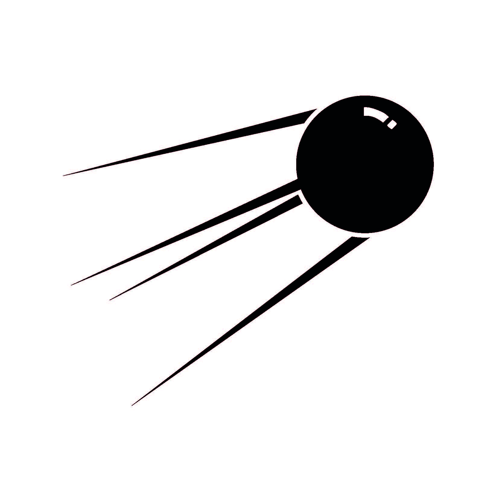

СПУТНИКОВЫЕ ОРБИТЫ
Существует множество различных определений, связанных с различными типами спутниковых орбит:


Все спутники обращаются вокруг Земли,используя один из двух базовых типов орбит.
Эллиптическая спутниковая орбита: Вращение спутника по эллиптической орбите означает изменение расстояния до поверхности Земли в разное время в течение одного витка.
Круговая спутниковая орбита: при обращении космического аппарата вокруг Земли по круговой орбите его расстояние над земной поверхностью остаётся всегда одинаковым.
Существует множество различных определений, связанных с различными типами спутниковых орбит:
Когда спутник обращается вокруг земли – по круговой или эллиптической орбите – орбита спутника формирует плоскость, которая проходит через центр земного притяжения или же Центр Земли.
Способы обращения спутника вокруг нашей планеты можно разбить на две категории в соответствии с направлением этого обращения:
Ускорительная орбита: Обращение спутника вокруг Земли называют ускорительным, если спутник вращается в том же направлении, в котором вращается Земля;
Ретроградная орбита: Обращение спутника вокруг Земли называют ретроградным, если спутник вращается в направлении, противоположном направлению вращения Земли.
Трассой орбиты спутника называют точку на земной поверхности, при пролёте над которой спутник находится прямо над головой в процессе движения по орбите вокруг Земли. Трасса образует круг, в центре которого расположен Центр Земли.
Это точки, в которых трасса орбиты переходит из одного полушария в другое.
Для неэкваториальных орбит существует два таких узла:
Восходящий узел: Это узел,в котором трасса орбиты переходит из южного полушария в северное.
Нисходящий узел: Это узел,в котором трасса орбиты переходит из северного полушария в южное.
При расчёте многих орбит необходимо учитывать высоту спутника над центром Земли.
Как правило, считается, что радиус Земли 6370 км
Этот показатель включает расстояние от спутника до поверхности Земли плюс радиус нашей планеты.
Круговые орбиты можно классифицировать по нескольким параметрам. Такие термины, как Низкая околоземная орбита, Геостационарная орбита (и им подобные) указывают на отличительную черту конкретной орбиты. Краткий обзор определений круговых орбит представлен в таблице ниже.